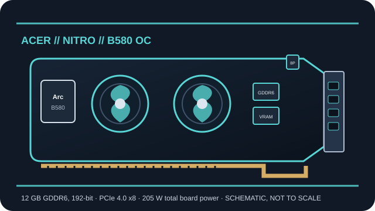

[ ACER // INDIVIDUAL BOARD RECORD ]
Acer Nitro Intel Arc B580 OC 12GB
A model-specific desktop add-in board using Intel Arc B580. This record separates the named board’s power, dimensions, cooling and ports from specifications shared by the underlying Intel GPU.

Recorded board specifications
| Exact board SKU | AN-B580-OCA / DP.Z4BWW.P01 — Acer Nitro Intel Arc B580 OC 12GB |
|---|---|
| GPU / architecture | Arc B580 (BMG-G21); Xe2-HPG (Battlemage), 20 Xe2 cores / 2,560 vector engines |
| Board clock | Up to 2,740 MHz board boost clock |
| Dedicated VRAM | 12 GB GDDR6, 192-bit |
| Host bus | PCI Express 4.0 x8 |
| Board power / connectors | 205 W total board power; 1 × 8-pin PCIe auxiliary input; Acer recommends a 600 W PSU |
| Display outputs | 3 × DisplayPort 2.1; 1 × HDMI 2.1; up to four displays subject to system and display configuration |
| Card dimensions | 268 × 113 × 40 mm (L × W × H); dual-slot |
| Cooling / physical design | Dual-fan Acer Nitro FrostBlade cooler with metal backplate |
| Driver / platform compatibility | Windows 10/11 64-bit with the supported Intel Arc graphics driver. Use a UEFI platform with Resizable BAR enabled where supported; consult current Intel driver release notes. Linux support depends on kernel, Mesa and distribution versions. |
Power, connectors, outputs and dimensions identify this maker’s board and are not interchangeable with other cards using the same GPU. Confirm the exact retail revision, case clearance, PSU capacity and auxiliary cabling against the cited board documentation.
Architecture and compatibility notes
Intel Arc B-series desktop graphics uses the Xe2-HPG (Battlemage) architecture. 12 GB GDDR6, 192-bit and the board’s PCI Express link are dedicated card resources; the host platform determines the negotiated bus speed and width. Resizable BAR support is a platform feature, not a GPU power connector.
Windows 10/11 64-bit with the supported Intel Arc graphics driver. Use a UEFI platform with Resizable BAR enabled where supported; consult current Intel driver release notes. Linux support depends on kernel, Mesa and distribution versions.
Sources & further reading
- Acer — Nitro Intel Arc B580 OC 12GB technical specificationsAcer’s model-specific specification and compatibility entry.
- Acer Store — Nitro Intel Arc B580 OC graphics cardAcer product listing for the B580 OC card.
- Intel ARK — Arc B-Series GraphicsIntel’s official Arc B-series GPU-family specifications.
- Intel — Arc graphics Windows driverOfficial driver download and release notes; confirm the supported operating-system version and GPU list before installing.
- Intel Support — Resizable BAR on Arc discrete graphicsPlatform setup guidance. CPU, motherboard firmware and UEFI configuration determine whether Resizable BAR is available.